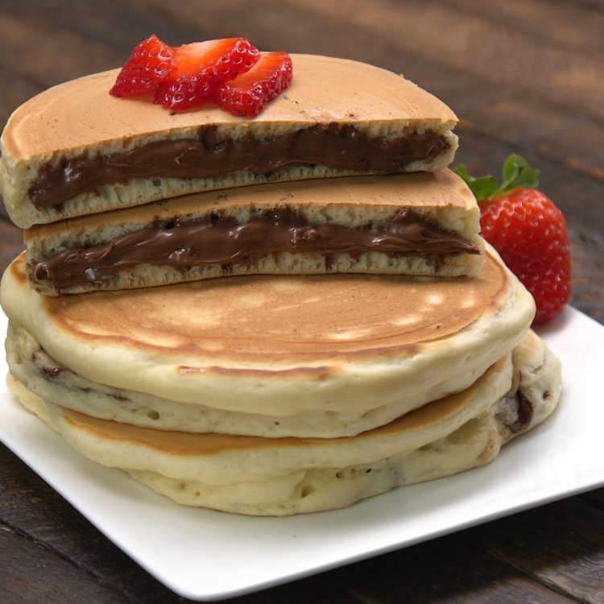

Nutella Stuffed Pancakes

When you want to make a treat that’s really on another delicious level, there’s one ingredient you can always count on: Nutella®! Everybody’s favorite hazelnut-chocolate spread has long been making desserts extra special.
Ingredients
- 10 to 14 tablespoons Nutella
- 1-½ cups all-purpose flour
- 3 tablespoons granulated sugar
- 1 tablespoon baking powder
- ¼ teaspoon kosher salt
- 1 egg
- 1 teaspoon pure vanilla extract
- 1 cup milk
Recipe
- Line a sheet pan with parchment paper.
- Spoon 1-½ tablespoons of Nutella® onto the prepared pan. Spread it out into a round disc about 2-½ inches in diameter.
- Repeat, making 7 to 8 Nutella® discs. Place the pan in the freezer for 15 to 20 minutes, or until the Nutella® discs are firm and hold their shape.
- Preheat a large skillet or griddle to medium-low heat.
- In a medium bowl, whisk together the flour, sugar, baking powder and salt. Add the egg, vanilla extract and milk.
- Mix the pancake batter until fully blended.
- Spray the preheated griddle with pan spray, and wipe away excess.
- Pour ¼ cup of the pancake batter on the prepared griddle. Place 1 frozen Nutella® disc into the center of the batter.
- Top the Nutella® disc with enough batter to cover completely. When the batter begins to bubble the pancake is ready to be flipped.
- Flip and cook the pancake for an additional 1 to 2 minutes, or until the other side is golden brown.
- Keep the completed pancakes warm while preparing the remaining pancakes. Serve warm.